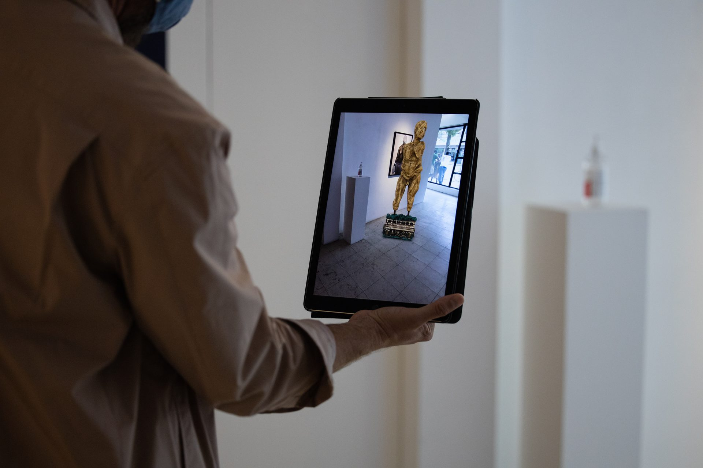
Ancient mythologies are filled with tales of drama, terror and transformations. Through her work, Auriea Harvey suggests a complex weaving of artistic narratives and philosophies, interlacing ancient mythologies within her personal narratives and emerging technologies to construct a living, personal mythology. She becomes an ancient goddess: frightful, unforgiving, eternally powerful.
The sculptures presented are Cyclops and Ram, creatures one might encounter in Homer’s Odyssey and Ovid’s Metamorphoses. These are not anonymous mythological figures. Each carries a specific narrative identity, a story told through the character. The Cyclops is villainous, fearsome, ancient in its beauty. The Ram is bound to the logic of metamorphosis itself: the body in perpetual transformation. Through 3D scanning, Auriea integrates her physical self into the works, achieving a state of digital divinity. The result is a personal mythology. She becomes an ancient goddess, embodies her past grandmothers, her imaginary ancestors.
Auriea’s works are digital at their core. The physical pieces are archives of the digital compositions, traces of another world. The spaces that initially appear empty actually hold the highest potential: access to the realm of digital spirituality.
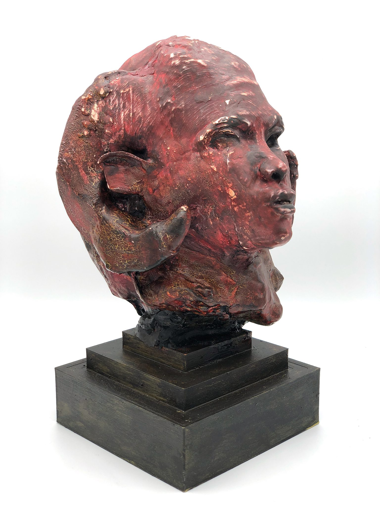
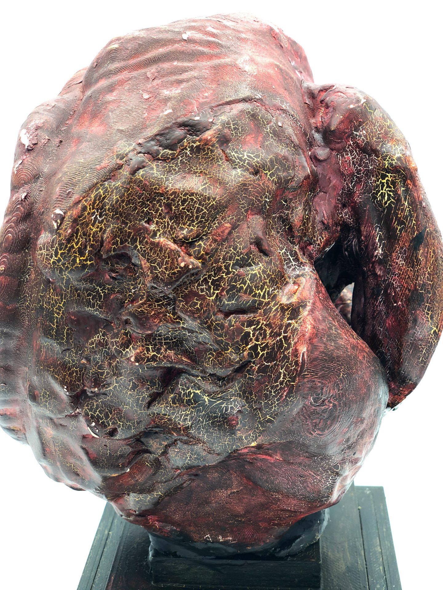
Through 3D scanning, Auriea integrates her physical self into the work. The spaces that appear empty hold the highest potential: access to the realm of digital spirituality.
A tension between history, which is real, and mythology, which is imagined, runs through all the work, just as the tension between physical sculpture and virtual sculpture defines the medium itself. The 3D-printed pieces on the gallery walls serve as archaeological artifacts from a digital world. The VR experience grants visitors direct access to the realm these creatures inhabit. What emerges is a spirituality that exceeds and escapes the human form—goddess figures that are no longer bound to the body but to something older, stranger, more powerful. The Polyphemau sculptures, with their Homeric invocations, extend the mythology further still. As Auriea transcends, she transforms into something beyond her physical manifestation: a divinity unforgiving, frightful, eternally powerful.
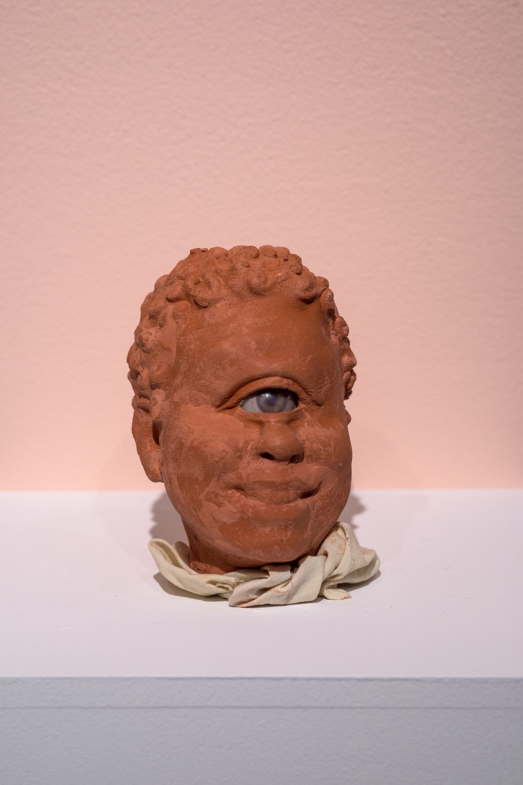
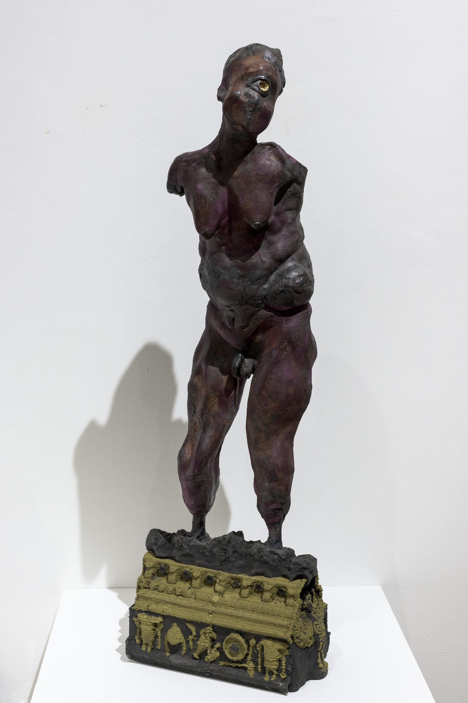
Auriea Harvey’s 3D-printed sculptures and AR works occupied the gallery at Art Mûr. Photography by Mike Patten.
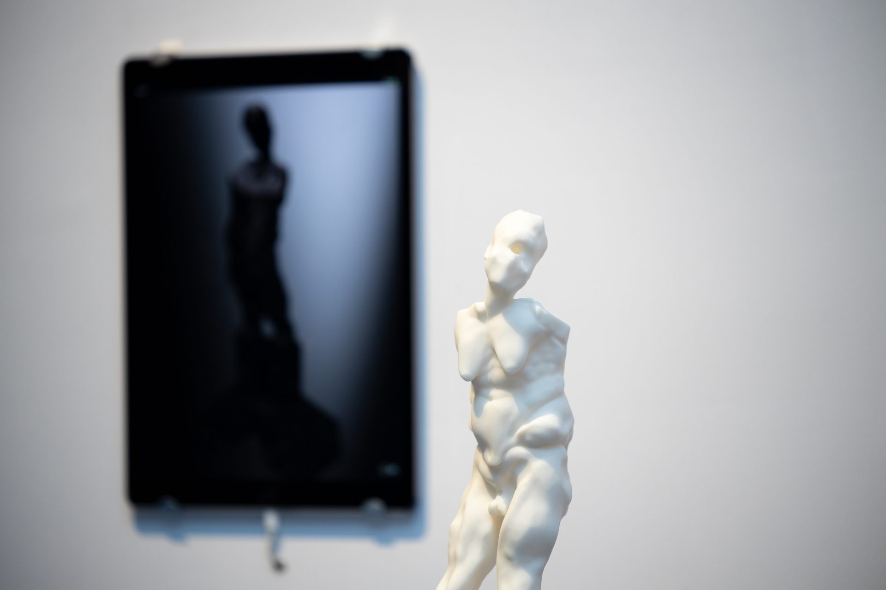
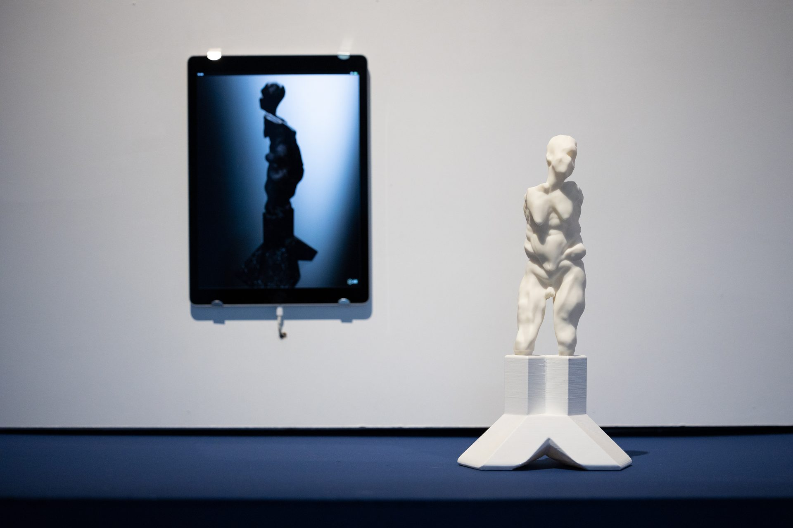
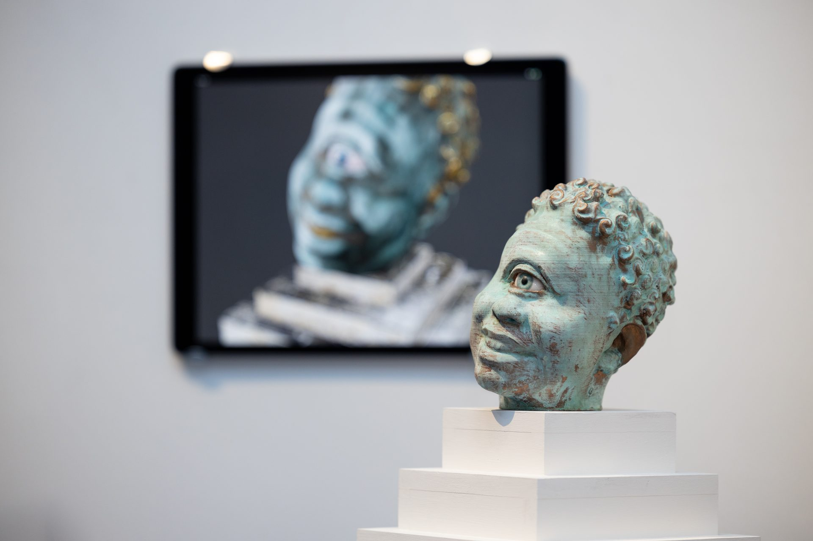
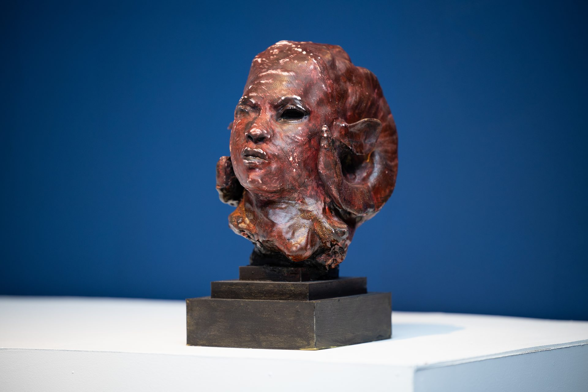
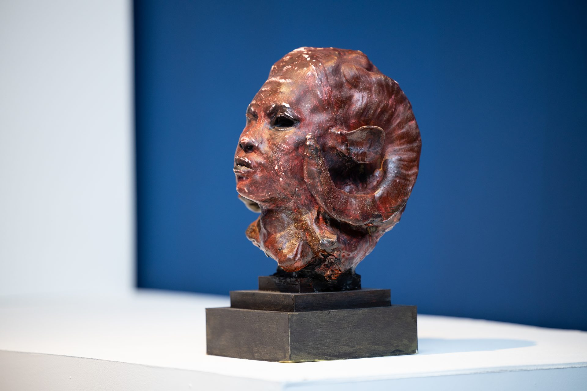
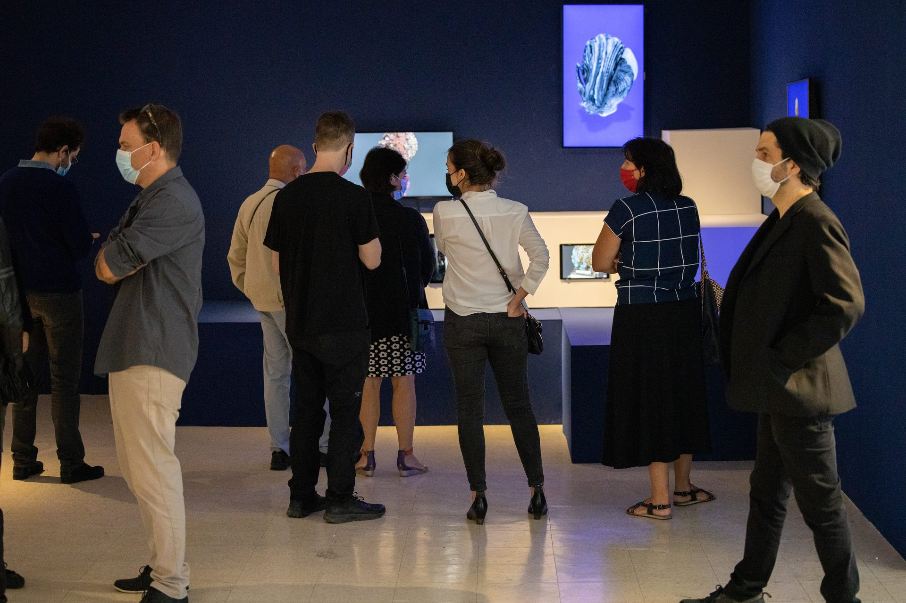
Each physical sculpture served as an anchor for an AR experience. Visitors could hold up a phone or tablet to see the digital originals materialize around the 3D-printed works—full-scale mythological figures inhabiting the gallery space.
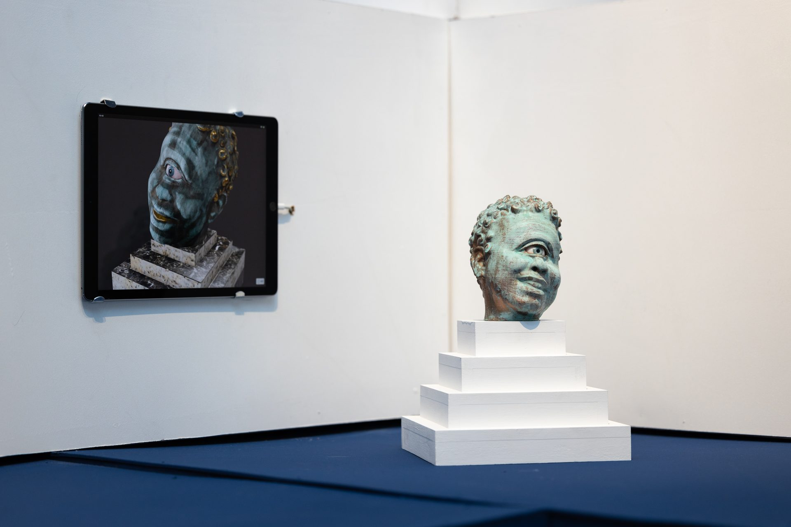
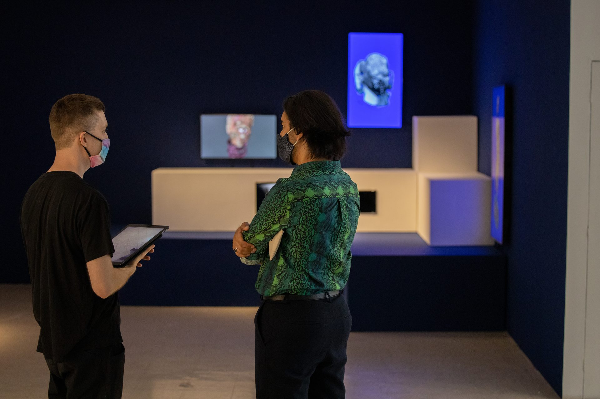